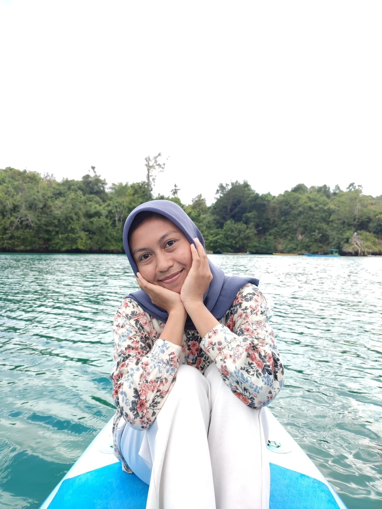

Semantic Web Profile
Wa Ode Zahra Ramadani
Mahasiswa Ilmu Komputer
Mahasiswa Program Studi Ilmu Komputer Universitas Halu Oleo semester 6. Memiliki ketertarikan pada pengembangan website, database, kecerdasan buatan, dan Semantic Web.
